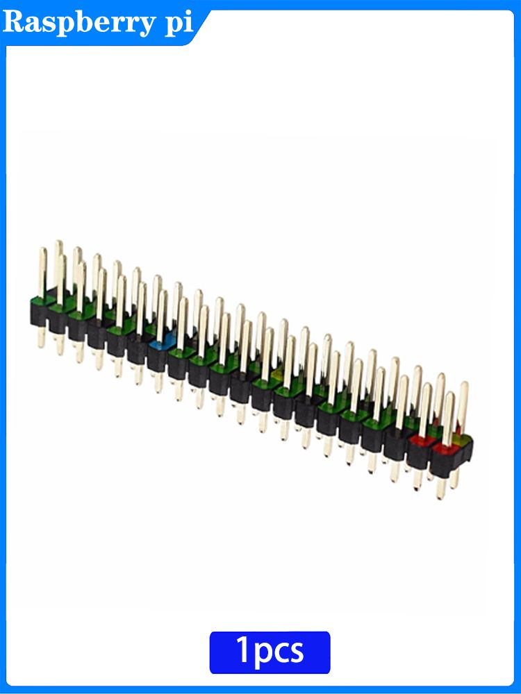

Разъём 40P двухрядный для Raspberry Pi Zero 2W
РазъёмыЭто не отдельная микросхема, а 40-контактный двухрядный GPIO-разъём (HAT-compatible footprint) для Raspberry Pi Zero 2 W. Он нужен для подключения плат расширения, проводов и внешней периферии к GPIO, питанию и интерфейсам платы.
Для Raspberry Pi Zero 2 W используется посадочное место под 40-pin GPIO header с шагом 2,54 мм; у версии Zero 2 W оно поставляется без впаянных штырей, если это не вариант с суффиксом H. Разъём обеспечивает доступ к GPIO-линиям, питанию 3,3 В и 5 В, земле, а также к интерфейсам вроде I²C, SPI, UART и PWM через стандартную распиновку Raspberry Pi. Такой разъём применяется для HAT-плат, модулей датчиков, реле, дисплеев и других расширений. Для самой Zero 2 W это именно стандартный 40-контактный GPIO-интерфейс Raspberry Pi, совместимый по расположению с HAT-экосистемой.